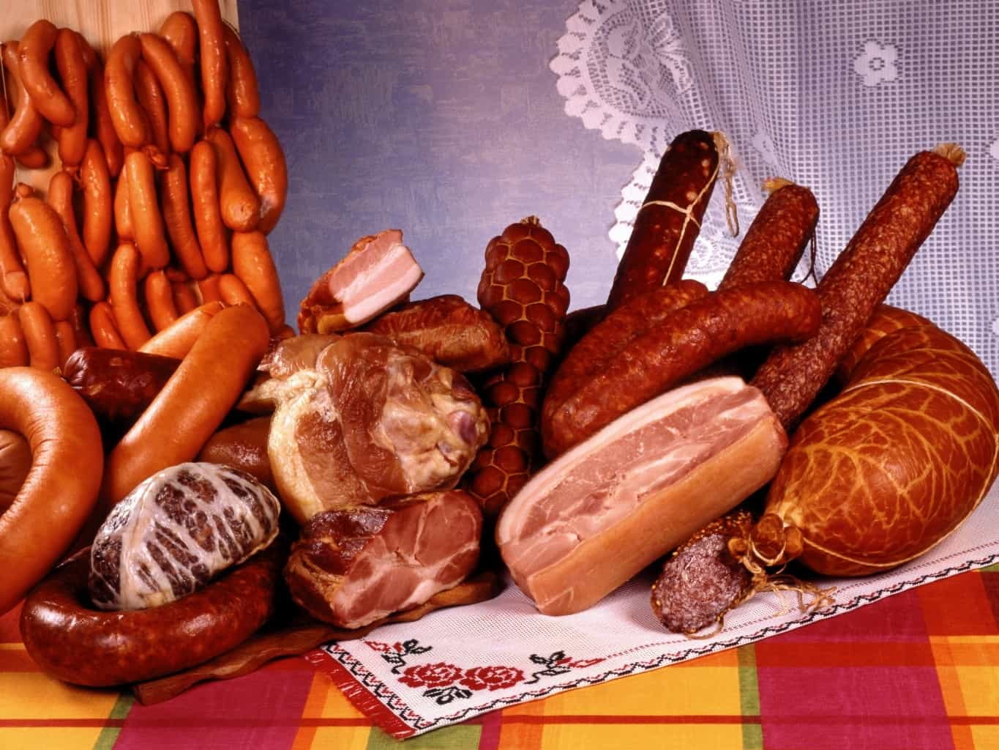
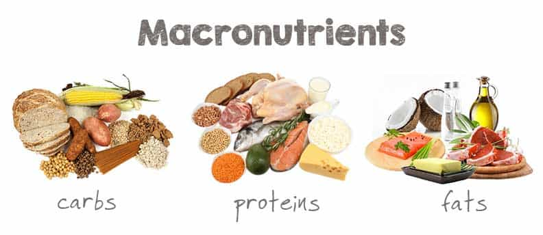
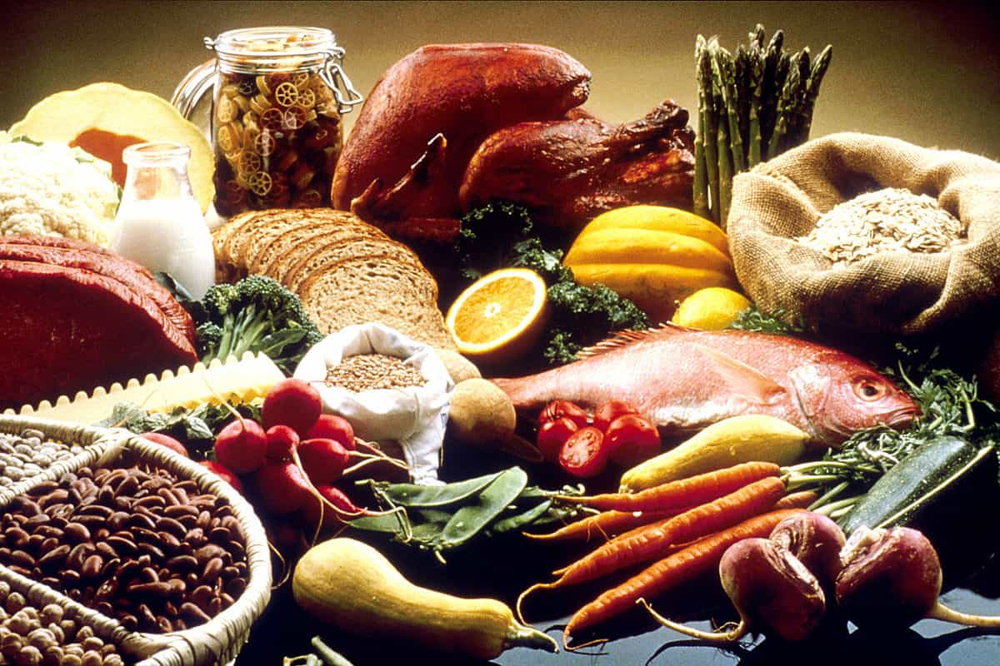

You want to build muscle, right? Of course you do, everybody wants to build muscle, whether it be for purposes of actually having functional strength or just having big aesthetic muscles to show off to the girls. Anthropologists will tell you that the desire of pretty much all men to have more muscle is universal amongst all cultures and ethnicities, regardless of what the liberals that control anthropology will tell you about “muh Western false body images” or whatever.
So if you want to build muscle, what do you have to do? Obviously, you’re going to have to do resistance training and plenty of it—that’s the simple part of it, but then there’s the dietary component.
“Well, that’s simple, Larsen!” you’re probably saying right now—“you just have to eat lots of protein!” Indeed, that is a major part of it—protein is the sole building block of muscle tissue, after all. But is it really so simple?

Drawbacks To Protein-Centric Diets
Eating a diet low in complex carbohydrates like fiber for long periods of time has been linked to numerous medical issues, not the least of which is constipation, as well as hypertension, heart disease, and atherosclerosis, as well as increased risk of kidney stones due to the process described in the next paragraph.
More to the point, if you were to eat a 100% protein diet, you would not be utilizing all of that protein to build your muscles. For the body to function it needs some glucose, the currency of cellular energy. And if you are not eating a sufficient supply of carbohydrates—the importance of which I have already argued—then your body will utilize whatever it has to make glucose, and that will often be protein.
Indeed, there are some tribes that exist today, and undoubtedly many more in the past, that ate a hypercarnivorous—which is to say almost entirely meat-based—diet, hence why the body evolved the ability to do the process known as ketogenesis, in which proteins will be denatured and converted into a protein-based sugar known as a ketone (ammonia and urea are produced as byproducts of this, which means the kidneys have to work harder and thus the kidney stones mentioned beforehand).
Fat is also a necessity due to it being the base of cellular membranes and the nervous system which includes the brain and spinal cord, both of which are a little important. It turns out that your kindergarten teacher was right, and you need to have a balanced diet of nutrients. That’ll give you overall good health, but you might be complaining, that’s not going to get you SWOLE. So what to do?

The Solution
Obviously you have to increase your protein intake, but in proportion to an increased amount of all other nutrients—this is how bulking works.
Skeletal muscle is approximately 72% water, 22% protein, and 6% fat, glycogen, and minerals. One pound of muscle tissue has about 100 grams of protein. Theoretically you would have to ingest an extra 14 grams of protein a day (meaning 14 grams beyond the recommended maintenance dose), although most experts believe the single most important factor in gaining lean mass is to consume adequate calories (combined with resistance training of course).
Said recommended dietary allowance is 1 gram per kilogram of bodyweight per day, so if you weigh 100 kilograms, eat 100 grams of protein just to function in your day. Thus, to get extra protein to build more muscle mass, you will have to eat between 1.2 and 1.7 grams of protein per kilogram of bodyweight. This will, unfortunately, necessitate you having to be something of pain in the ass to your “normie” friends and family as you analyze and pore over nutrition facts and calculate protein amounts in your head, but never mind that.
And with increased protein should come increased carbohydrate and fat consumption as well—and as always, micronutrients will inevitably come with healthy consumption of macronutrients (i.e., if you’re eating actual food and not crap).

Carbohydrates—hopefully in the form of complex carbohydrates like fruits and vegetables and whole grains—should constitute 6-8 grams per kilogram of bodyweight, and fats—again, hopefully healthy fats from meat and fish and dairy—will more often than not come with your protein so you don’t need to be too concerned with getting a certain amount of fats. Indeed, anything between 10-20% of your calories coming from fat will be sufficient to stave off nervous degeneration.
The recommendations for macronutrient percentages are roughly 45-60% carbohydrates, 20-35% protein, and 20-25% of fats. This percentage likely will remain even if you are eating increased consumption of protein—you’re going to need energy if you’re vigorously exercising, after all.
To get the most out of your diet, you are going to have to be something of a stickler in planning your meals—but it’s a small price to pay to meet your fitness goals.
Read More: Supplements Don’t Build Muscle